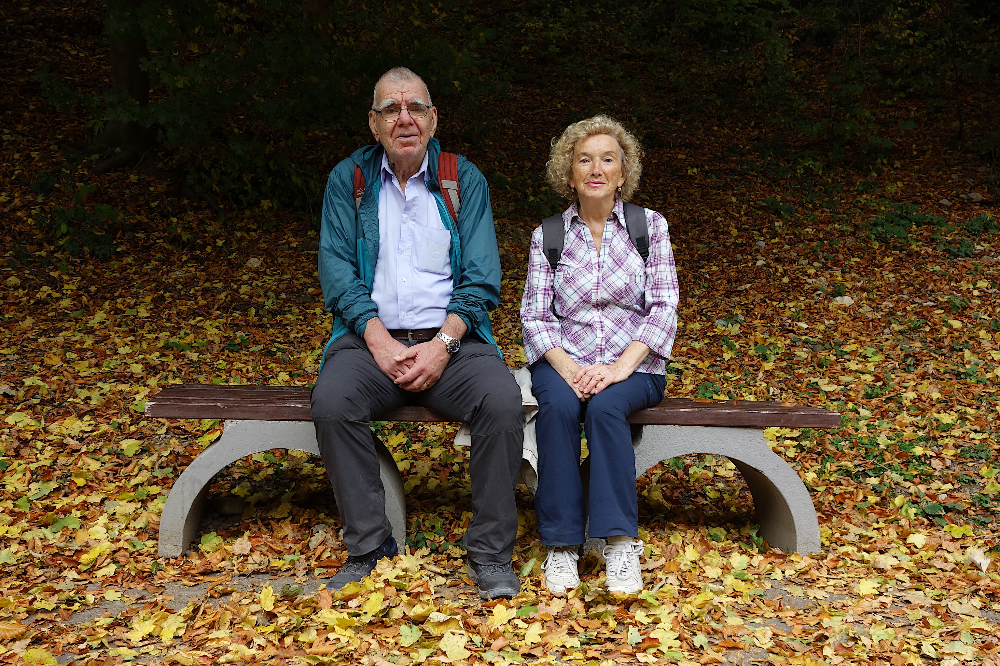

Buni & Moshu, albume foto

Apăsați pe titlul albumului pentru a vedea fotografiile. Albumele se vor deschide într-o fereastră nouă.
-
Napoli și împrejurimi
21-29 martie 2026
-
Iași
26-29 mai 2025
-
Alba Iulia
12-14 mai 2025
-
Madrid, Segovia, Salamanca, Malaga
7-15 aprilie 2025
-
Oradea
12-15 noiembrie 2024
-
Cambridge și Londra
7-13 octombrie 2024
-
Gran Canaria
3-10 aprilie 2024
-
Verona, Sirmione, Padova, Mantova, Bergamo
11-19 octombrie 2023
-
Ferrara, Bologna, Udine, Cividale del Friuli, Venzone
25 mai - 6 iunie 2023
-
Mallorca
13-20 martie 2023
-
Cambridge & Londra
19-24 octombrie 2022
-
Kolding, Ribe VikingeCenter, Danemarca
22 iulie - 5 august 2022
-
Paris
08-15 iunie 2022
-
Barcelona & Valencia
21 martie - 02 aprilie 2022
-
Val d'Isère, Elvira si Mihai
14 - 18 februarie 2022
-
Danemarca, Esbjerg, Kolding
06-11 ianuarie 2022
-
Maroc
23 noiembrie - 3 decembrie 2021
-
Viena
30 septembrie - 06 octombrie 2021
-
Givskund Zootopia (Dk) - München (D) - Salzburg (A)
24 iunie - 03 iulie 2021
-
Elvira si Mihai la ski in Chamonix
17 - 23 februarie 2020
-
Chile & Argentina
06 - 23 octombrie 2019
-
Lisabona
23-28 septembrie 2019
-
Tarile Baltice
25 august - 03 septembrie 2019
-
Cu Elvira si Paul in Danemarca
25 iunie - 1 iulie 2019
-
Spania & Portugalia
23 aprilie - 07 mai 2019
-
Kolding, Danemarca
08-10 martie 2019
-
College Station, Texas US
26 octombrie - 17 decembrie 2018
-
Alaska
15 - 29 septembrie 2018
-
New York și în New Haven
17-26 iunie 2018
-
Lisabona
28 - 31 mai 2018
-
Paris
07 - 14 mai 2018
-
Toscana
12 - 28 aprilie 2018
-
Australia & Noua Zeelanda
06 - 28 noiembrie 2017
-
Sicilia
05 - 17 octombrie 2017
-
Berlin
11 - 15 septembrie 2017
-
Viena
25 aprilie - 02 mai 2017
-
Andaluzia
26 martie - 04 aprilie 2017
-
Malta
18 - 22 octombrie 2016
-
California, Nevada, Arizona
01-12 septembrie 2016
-
Prin Ardeal cu Dan Pavalache
09 - 12 august 2016
-
Madrid, Toledo, El Escorial
22 - 28 aprilie 2016
-
Chicago (US), London & Toronto (Canada)
08 - 19 septembrie 2015
-
Azore si cateva ore in Lisabona
02 - 07 iunie 2015
-
Buenos Aires (Argentina) , Colonia si Montevideo (Uruguay)
25 aprilie - 04 mai 2015
-
Irlanda
01 - 08 septembrie 2014
-
Barcelona
20 - 26 iulie 2014
-
Leoben, Austria
09 - 10 iulie 2014
-
München
03 - 07 iulie 2014
-
Neckargemünd, Heidelberg, Mannheim si imprejurimi
20 - 27 septembrie 2013
-
Ibiza (Santa Eulalia & Eivissa)
16 - 20 iunie 2013
-
Buni Viorica in Grecia: Asprovalta, Athos, Meteora, Kavala, Tassos
31 mai - 06 iunie 2013
-
Turcia: Çanakkale, Kuşadası si imprejurimi
22 - 29 mai 2013
-
Zagreb & Stockholm
12 martie 2013 & 10 - 13 iulie 2012
-
Darmstadt & Frankfurt am Main
29 octombrie - 01 noiembrie 2011
-
Viena & Bratislava
01 - 05 septembrie 2011
-
Aix_en_Provence
09 - 11 mai 2011
-
Germania (Heidelberg, Friedrichshafen), Olanda (Haga), Belgia (Bruxelles)
14 - 18 aprilie 2011
-
Cu Florentina si Gigi in Italia
03 - 07 aprilie 2011
-
Sibiu cu Mishu Topa, 25 august 2010
25 august 2010
-
Dubrovnik
29 septembrie - 2 octombrie 2009
-
Lisabona
07 - 11 septembrie 2009
-
Olanda, New York, Calgary, Banff
14 iulie - 04 august 2009
-
Venezia, Udine, Cividale del Friuli
07 mai - 10 mai 2009
-
Roma
08-14 septembrie 2008
-
Rijeka si Opatija (Croatia)
06-08 iulie 2008
-
Amsterdam, Delft si Haga (Olanda), Victoria si Vancouver (BC, Canada)
01 - 27 martie 2008
-
Paris
09-12 noiembrie 2007
-
Venezia, Murano, Fusine Laghi, Venzone
14-18 septembrie 2007
-
Praga
01 - 05 iulie 2007
-
Stockholm
12 - 13 aprilie 2007
-
Buni in Turcia
09 - 18 octombrie 2006
-
Toronto, Niagara (Canada)
25 noiembrie - 2 decembrie 2005
-
Montreux, Congresul DTIP
01 - 03 iunie 2005
-
Santorini si Atena
24-28 mai 2005
-
Montreux, Congresul DTIP & vizita la Paul Scherrer Institut, Viligen
11–14 mai 2004
-
Clermont-Ferrand, excursie cu IFMA
octombrie 2003
-
Clermont-Ferrand
10 noiembrie 2002 si 27 octombrie 2005
-
Università degli Studi di Udine
12 iunie 2002 si 30 aprilie 2003
-
Buni Viorica in Grecia: Salonic, Creta, Rodos
probabil in aprilie 2003
-
Clermond-Ferrand (F), Lido di Jesolo, Venezia, Udine (I), Villach (A)
2003
-
Paris
noiembrie 2000
-
Praga
11-14 octombrie 2000
-
Chisinau
iunie 2000
-
Italia: Trieste, Opicina, Venezia, Florenta, Roma, Rapallo, Aosta, Sirmione
februarie 1996
-
Gemona, Venzone, Lecce, Udine, Padriciano (ICGEB), Budapesta
1995-1996
-
Italia: Trieste (stagiu Area di ricerca / Science Park, Padriciano), Opicina, Muggia, Udine, Firenze
1995
-
Italia: Trieste (stagiu Aria di Ricerca Padriciano), Opicina, Duino, Udine, Roma
1994
-
Londra (stagiu TEMPUS in Mile End Campus of Queen Mary University of London), Cambridge
30 mai - 11 iulie 1993
-
Ungaria, Austria, Elvetia, Franta, Italia
01 septembrie - 06 octombrie, 1992
-
Cehoslovacia
mai 1989
-
Bulgaria
vara 1987
-
Ungaria, Cehoslovacia, Polonia, Germania de Est
vara 1985
-
URSS
06 - 16 mai 1974
-
Praga, Germania de est (Jena, Erfurt, Wartburg, Weimar, Leipzig, Meissen, Dresda), Budapesta
16 - 31 iulie 1973